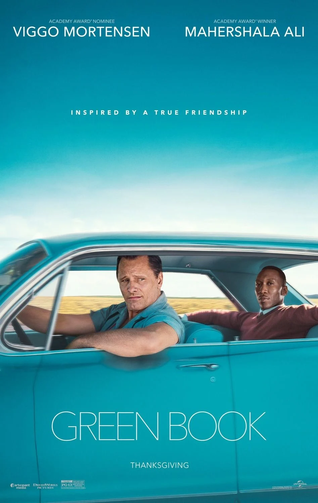

Em 1962, Tony Lip, um motorista ítalo-americano, é contratado para trabalhar para Don Shirley, um pianista negro que fará uma turnê pelo sul dos Estados Unidos.
Durante a viagem, os dois precisam lidar com as diferenças culturais e com o racismo existente naquela época. A convivência entre os dois acaba transformando a relação inicialmente profissional em uma amizade.
Green Book venceu o Oscar de Melhor Filme em 2019. O filme também recebeu os prêmios de Melhor Ator Coadjuvante, para Mahershala Ali, e Melhor Roteiro Original.